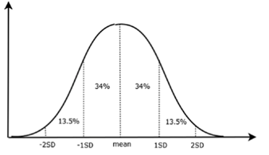
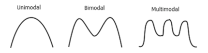
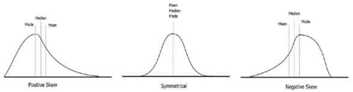

a <- c(1, 2, 3, 4, 5, 5, 5, 6, 7, 8)
# To get mode in a vector you create a frequency table
(y <- table(a)) a
1 2 3 4 5 6 7 8
1 1 1 1 3 1 1 1 names(y)[which(y==max(y))][1] "5"Descriptive statistics summarizes the data set, lets us have a feel and understanding of the data and variables. Descriptive statistics usually focuses on:
Descriptive statistics allows us to decide or determine whether we should use inferential statistics to identify the relationship between data sets, or use regression analysis instead to identify the relationships between variables.
summary() and str()The summary() and str() functions are the fastest ways to get descriptive statistics of the data.
summary() function gives the basic descriptive statistics of the data.str() function gives the structure of the variables.The mode is a value in data that has the highest frequency:
Example:
a <- c(1, 2, 3, 4, 5, 5, 5, 6, 7, 8)
# To get mode in a vector you create a frequency table
(y <- table(a)) a
1 2 3 4 5 6 7 8
1 1 1 1 3 1 1 1 names(y)[which(y==max(y))][1] "5"The median is the middle or midpoint of the data and is also the 50 percentile of the data.
The median is affected by the outliers and skewness of the data.
median(a)[1] 5The mean is the average of the data. The mean works best if the data is distributed in a normal distribution or distributed evenly.
mean(a)[1] 4.6The measures of variability are the measures of the spread of the data. These are encompasses:
The variance is the average of squared differences from the mean, and it is used to measure the spreadness of the data:
A <- c(1, 2, 3, 4, 5, 5, 5, 6, 7, 8)
N <- length(A)
var(A) * (N - 1) / N[1] 4.24var(A)[1] 4.711111The standard deviation is the square root of a variance and it measures the spread of the data.
A <- c(1, 2, 3, 4, 5, 5, 5, 6, 7, 8)
N <- length(A)
variance <- var(A) * (N - 1) / N
sqrt(variance)[1] 2.059126sd(A)[1] 2.170509The range is the difference between the largest and smallest points in the data:
range(A) [1] 1 8res <- range(A)
diff(res)[1] 7min(A)[1] 1max(A)[1] 8The interquartile range is the measure of the difference between the 75 percentile or third quartile and the 25 percentile or first quartile.
IQR(A)[1] 2.5You can get the quartiles by using the quantile() function:
quantile(A) 0% 25% 50% 75% 100%
1.00 3.25 5.00 5.75 8.00 If the points do not deviate away from the line, the data is normally distributed.

To see whether data is normally distributed, you can use the qqnorm() and qqline() functions:
qqnorm(data$x) #You must first draw the distribution to draw the line afterwards
qqline(data$x)You can also use a Shapiro Test to test whether the data is normally distributed. If the p-value is more than 0.05, you can conclude that the data does not deviate from normal distribution:
shapiro.test(data$x)The modality of a distribution can be seen by the number of peaks when we plot the histogram.

Skewness is a measure of how symmetric a distribution is and how much the distribution is different from the normal distribution.
Negative skew is also known as left skewed, and positive skew is also known as right skewed: - A positive skewness indicates that the size of the right-handed tail is larger than the left-handed tail. - A negative skewness indicates that the left-hand tail will typically be longer than the right-hand tail.

The Pearson’s Kurtosis measure is used to see whether a dataset is heavy tailed, or light tailed. High kurtosis means heavy tailed, so there are more outliers in the data.
To find the kurtosis and skewness in R, you must install the moments package:
install.packages("moments")
skewness(data$x)
kurtosis(data$x)A binomial distribution has two outcomes, success or failure, and can be thought of as the probability of success or failure in a survey that is repeated various times.
dbinom(32, 100, 0.5)[1] 0.000112817